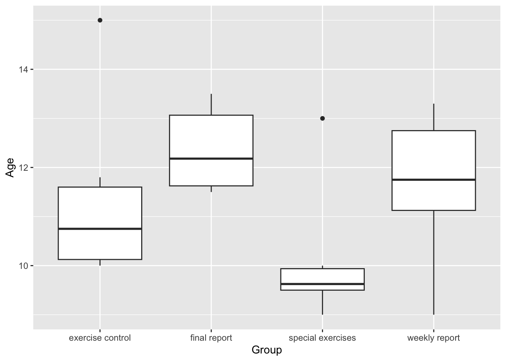
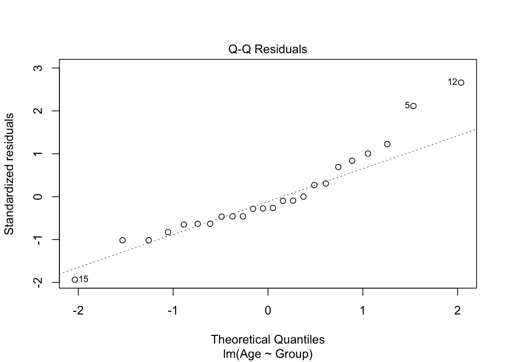
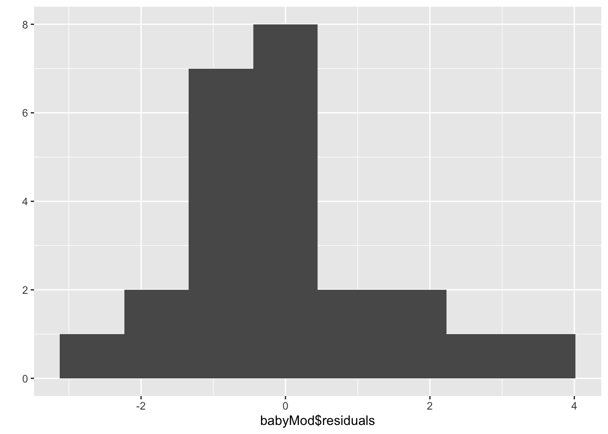

data("WalkingBabies")
qplot(x = Group, y = Age, data = WalkingBabies, geom = "boxplot")Multiple Comparisons
Announcements
- Grades for HW2: Scale fixed on Moodle
- HW3 being graded now
- HW4 posted, due Friday night
- Office hours (Bass 412)
- Thurs cancelled due to Rally Day
- Friday: 10:50a - 12:05p
- Where to get HW help
- Spinelli center tutoring Sun-Thurs 7-9p, Sabin-Reed 301.
- Use
#hw4-questionschannel on Slack. - Direct message me on Slack.
Notes on HW 4
- 5.70: Open ended Hawks
culmen
Agenda
- Warm-up
- CI and Effect sizes review
- Multiple comparisons
- MP1 topics time
- Introduction to Qualtrics (video on Moodle)
Warm-up: Walking Babies Example
As a rule it takes about a year before a baby takes its first steps alone. Scientists wondered if they could get babies to walk sooner by prescribing a set of special exercises. They decided to compare babies given special exercises with a control group of babies. But the scientists recognized that just showing an interest in the babies and their parents could cause a placebo effect. That is, the attention alone could influence parents and their babies in ways that would shorten the time to walk. 24 babies were randomly assigned to one of four conditions:
- Special exercises: Shown special exercises and parents are called weekly and asked it their baby was walking.
- Exercise control: No special exercises but parents were told to have baby exercise for 15 min every day. Parents were called each week.
- Weekly report: No exercises but parents were called each week.
- Final report: Only a report at the end on the study.
They recorded the age (in months) the babies first walked.
Warm-up: Walking Babies Example
Conduct an ANOVA to test if there are mean differences in walking age between treatments. Check the ANOVA conditions (SINZ only). What do you conclude?

Warm-up: Walking Babies Example
data("WalkingBabies")
qplot(x = Group, y = Age, data = WalkingBabies, geom = "boxplot")
Warm-up: Walking Babies Example
WalkingBabies %>%
group_by(Group) %>%
summarise(n = n(),
m = mean(Age),
sd = sd(Age))# A tibble: 4 × 4
Group n m sd
<fct> <int> <dbl> <dbl>
1 exercise control 6 11.4 1.90
2 final report 6 12.4 0.871
3 special exercises 6 10.1 1.45
4 weekly report 6 11.6 1.56 1.90/0.871[1] 2.181401S: No…but could be worse. I: babies are in different families.
Warm-up: Walking Babies Example
babyMod <- lm(Age ~ Group, data = WalkingBabies)
anova(babyMod)Analysis of Variance Table
Response: Age
Df Sum Sq Mean Sq F value Pr(>F)
Group 3 15.597 5.1991 2.3418 0.1039
Residuals 20 44.402 2.2201 Warm-up: Walking Babies Example
plot(babyMod, which = 2)
N: looks ok with possible skew
Warm-up: Walking Babies Example
qplot(x = babyMod$residuals, bins = 8)
N: normality is satisfied; Z: Yes, centered at zero.
Last time
Effect Sizes and Confidence Intervals
- IS there an effect?
- The p-value for our F-ratio only tells us if effects are detectable.
- How big is IT?
- Practical significance is different from statistical significance.
CI for Pairwise Group Differences
\[(\bar{y_i}-\bar{y_j}) \pm t^*\cdot SD \sqrt{1/n_i+1/n_j}\]
Diamonds example: For difference between G (near colorless) and F (colorless)
MSE = 0.6771 #from our ANOVA source table
df_E = 344 #from our ANOVA source table
t <- qt(.975, df_E) #for 95% CI
n_g = filter(ds, Color == "G")$n #sample size for G
n_f = filter(ds, Color == "F")$n #sample size for F
mean_g <- log(filter(ds, Color == "G")$m) #mean for G
mean_f <- log(filter(ds, Color == "F")$m) #mean for F
#Confidence interval
UL <- (mean_g-mean_f) + t*sqrt(MSE)*sqrt(1/n_g+1/n_f) #upper limit
LL <- (mean_g-mean_f) - t*sqrt(MSE)*sqrt(1/n_g+1/n_f) #lower limitWe are 95% confident that the true mean difference in (log) price between near colorless and colorless diamonds is between -0.20 and 0.29. (There is no evidence of a difference between mean prices for colorless and near colorless diamonds.)
Effect Size
Effect Size (D)
\[D_{ij} = \frac{(\bar{y_i}-\bar{y_j})}{SD}\]
- Where again \(SD = \sqrt{MSE}\)
D = (mean_g-mean_f)/sqrt(MSE)
D[1] 0.05175002The difference between the price of nearly colorless diamonds and colorless diamonds is only 0.052 times the size of the typical within-group deviations in price. Such a small difference!
Effect Size
R-squared for One-Way ANOVA
\(R^2\) is the proportion of total variation explained by the factor:
\[R^2 = \frac{SS_{treatment}}{SS_{Total}}\]
modDia <- lm(log(TotalPrice) ~ Color, data = Diamonds)
anova(modDia)Analysis of Variance Table
Response: log(TotalPrice)
Df Sum Sq Mean Sq F value Pr(>F)
Color 6 29.946 4.9909 7.3713 1.972e-07 ***
Residuals 344 232.913 0.6771
---
Signif. codes: 0 '***' 0.001 '**' 0.01 '*' 0.05 '.' 0.1 ' ' 1Effect Size
R-squared for One-Way ANOVA
R2 = 29.946/(29.946+232.913)
R2[1] 0.1139242The \(R^2\) value is 0.11, so about 11% of the variation in the total price of a diamonds is explained by the diamonds’ colors.
Try it on the Sandwich Ants data
Use the SandwichAnts dataset to
- Check the ANOVA conditions (SINZ) and test if there are difference in Ants depending on the sandwich
Fillingusing ANOVA. Interpret the results of your analysis in context. - Calculate the CI and effect size (D) for the difference between
HamPicklesandPeanutButter, and for the difference betweenPeanutButterandVegemite. Interpret the results of your analysis in context. - Calculate the \(R^2\) for
Fillingand interpret it in a sentence.
I’ll do it with you! (and post the code afterwards)

Multiple Comparisons
If we want to do all pairwise comparisons for the walking babies, how many comparisons would we need to make?
Multiple Comparisons
If we want to do all pairwise comparisons for the walking babies, how many comparisons would we need to make? We could use the n choose k formula:
\[{n \choose k} = \frac{n!}{k!(n-k)!}\]
Multiple Comparisons
If we want to do all pairwise comparisons for the walking babies, how many comparisons would we need to make? We could use the 4 choose 2 formula:
\[{4 \choose 2} = \frac{4!}{2!(4-2)!}=\frac{4\cdot3\cdot2\cdot1}{2\cdot1(2\cdot1)}=\frac{24}{4}=6\]
Multiple Comparisons
If we want to do all pairwise comparisons for the walking babies, how many comparisons would we need to make?
\[{n \choose k} = \frac{n!}{k!(n-k)!}\]
- When we have more than two levels of a factor of interest, we might want to compare specific groups to see which one differ from each other. We can
- Compute a confidence interval for the difference between two groups.
- Run a set of all pairwise comparisons.
- Create custom contrasts of more complex ideas.
Recall: our Type I error rate is 5% for one test! If the null hypothesis were true, 1 out of 20 tests we run would be significant.
Adjusting for Multiple Comparisons
When we do multiple significance tests (or construct multiple confidence intervals), our effective type I error rate is inflated. Most statisticians agree that we should adjust our type I error rate to account for our multiple tests, and control the familywise error rate.
Four methods for controlling the familywise :
- Fisher Least Significant Difference (Fisher’s LSD)
- Tukey Honest Significant Difference (Tukey’s HSD)
- Scheffe test
- The Bonferroni correction
Adjusting for Multiple Comparisons
When we do multiple significance tests (or construct multiple confidence intervals), our effective type I error rate is inflated. Most statisticians agree that we should adjust our type I error rate to account for our multiple tests, and control the familywise error rate.
Four methods for controlling the familywise :
- Fisher Least Significant Difference (Fisher’s LSD)
- Tukey Honest Significant Difference (Tukey’s HSD)
- Scheffe test
- The Bonferroni correction
Fisher’s LSD
Fisher’s LSD reasons that a pairwise difference is significant as long as it’s larger than the margin of error for that pairwise comparison. Thee step process:
- Step 1: Is the omnibus ANOVA F-test significant? No \(\longrightarrow\) Stop, Yes \(\longrightarrow\) Step 2,
- Step 2: Find the least significant difference (LSD) for each pair:
\[LSD = t^*\cdot SD \sqrt{1/n_1+1/n_2}\]
- Where \(t^*\) is your critical \(t\) for the \(df_{error}\) and your level of confidence,
- and \(SD = \sqrt{MSE}\).
- Step 3: Declare each difference of group means significant if the difference is as large as the LSD.
Fisher’s LSD
For the sandwich ants.
mean_v = 34.625
mean_h = 55.500
mean_p = 40.375
MSE = 157.01 #from our ANOVA source table
df_E = 45 #from our ANOVA source table
t <- qt(.975, df_E) #for 95% CI
n = 16 #this is a balance design!
LSD = t*sqrt(MSE)*sqrt(1/n+1/n)
LSD[1] 8.922785Fisher’s LSD
For the sandwich ants. Fisher’s LSD is 8.923.
mean_h-mean_p[1] 15.125mean_h-mean_v[1] 20.875mean_p-mean_v[1] 5.75Based on Fisher’s LSD there are statistically significant differences between the number of ants on the ham and pickles filled sandwiches and both the peanut butter and Vegemite sandwiches, but not between the peanut butter and Vegemite sandwiches. Do ants like meat or pickles?!
Bonferroni Correction
The bonferroni correction simply takes our type I error rate (\(\alpha = .05\)) and divides by the number of tests we’re conducting. For sandwich ants it is 3. Here’s the n choose k formula again for sandwich ants:
\[{3 \choose 2} = \frac{3!}{2!(3-2)!}=3\]
#bonferroni correction
.05/3[1] 0.01666667We could conduct \(t\)-tests (or multiple regression!) for all pairs of conditions, but use an alpha of .0167 (instead of .05) to make your decision about rejecting the null hypothesis. Your \(p\)-value will need to be less than .0167 to reject the null hypothesis.
Using Multiple Regression
antsMod <- lm(Ants ~ Filling, data = SandwichAnts)
summary(antsMod)
Call:
lm(formula = Ants ~ Filling, data = SandwichAnts)
Residuals:
Min 1Q Median 3Q Max
-21.500 -10.094 2.938 9.500 22.375
Coefficients:
Estimate Std. Error t value Pr(>|t|)
(Intercept) 55.500 3.133 17.717 < 2e-16 ***
FillingPeanutButter -15.125 4.430 -3.414 0.00136 **
FillingVegemite -20.875 4.430 -4.712 2.38e-05 ***
---
Signif. codes: 0 '***' 0.001 '**' 0.01 '*' 0.05 '.' 0.1 ' ' 1
Residual standard error: 12.53 on 45 degrees of freedom
Multiple R-squared: 0.3449, Adjusted R-squared: 0.3158
F-statistic: 11.85 on 2 and 45 DF, p-value: 7.351e-05Using Multiple Regression
Call:
lm(formula = Ants ~ Filling, data = SandwichAnts)
Residuals:
Min 1Q Median 3Q Max
-21.500 -10.094 2.938 9.500 22.375
Coefficients:
Estimate Std. Error t value Pr(>|t|)
(Intercept) 55.500 3.133 17.717 < 2e-16 ***
FillingPeanutButter -15.125 4.430 -3.414 0.00136 **
FillingVegemite -20.875 4.430 -4.712 2.38e-05 ***
---
Signif. codes: 0 '***' 0.001 '**' 0.01 '*' 0.05 '.' 0.1 ' ' 1
Residual standard error: 12.53 on 45 degrees of freedom
Multiple R-squared: 0.3449, Adjusted R-squared: 0.3158
F-statistic: 11.85 on 2 and 45 DF, p-value: 7.351e-05Using multiple regression with a bonferroni correction applied, what do we conclude about the differences in ants between filling conditions? Which comparison is missing?
Mini Project 1
Topic brainstorming
- Two minute free write to write down some ideas for your factor of interest and response variable.
- Get into groups of three and take turns discussing your ideas.
- Raise your hand if you have any questions.
Introduction to Qualtrics
- Log in to Qualtrics and enter your Smith credentials.
- I usually just google “Smith Qualtrics”